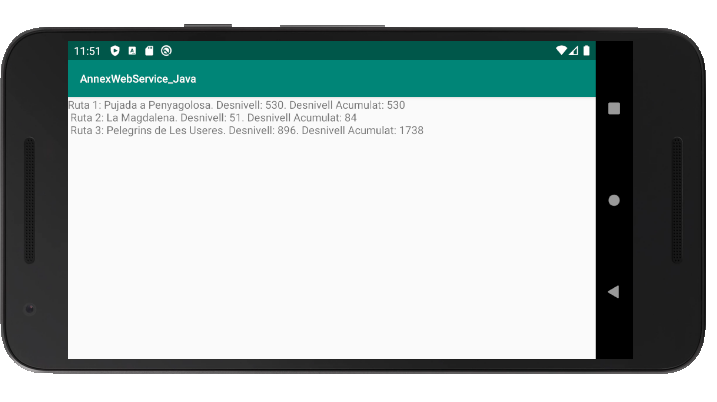

7.- Accés des d'Android
Des d'Android no cal buscar cap llibreria, que ja la duu incorporada.
El tractament serà el mateix, però ara haurem d'accedir no des del programa principal, sinó des d'un thread. Aquesta limitació ja l'hem vista alguna vegada. Col·locarem en un TextView el mateix que en el cas d'IntelliJ.
Ho farem per exemple en un projecte nou anomenat Annex_WebService.
Aquest seria el layout:
<?xml version="1.0" encoding="utf-8"?>
<androidx.constraintlayout.widget.ConstraintLayout xmlns:android="http://schemas.android.com/apk/res/android"
xmlns:tools="http://schemas.android.com/tools"
android:layout_width="match_parent"
android:layout_height="match_parent"
tools:context=".MainActivity">
<TextView
android:text=""
android:id="@+id/text"
android:layout_width="match_parent"
android:layout_height="match_parent"
/>
</androidx.constraintlayout.widget.ConstraintLayout>
I aquest el MyActivity. Observeu com ens ha tocat posar l'adreça de la màquina real, ja que localhost faria referència al dispositiu android.
import androidx.appcompat.app.AppCompatActivity
import android.os.Bundle
import kotlinx.android.synthetic.main.activity_main.*
import org.json.JSONArray
import org.json.JSONObject
import org.json.JSONTokener
import java.net.HttpURLConnection
import java.net.URL
class MainActivity : AppCompatActivity() {
internal var cont: String = ""
private var sqlThread: Thread = object : Thread() {
override fun run() {
val connection = URL("http://192.168.1.101:41062/www/rutes_2.php").openConnection() as HttpURLConnection
val dades = connection.inputStream.bufferedReader().readText()
val rutes = JSONTokener(dades).nextValue() as JSONArray
for (i in 0 until rutes.length()){
val r = rutes.get(i) as JSONObject
cont += ("Ruta " + r.get("num_r").toString() + ": " + r.get("nom_r")
.toString() + ". Desnivell: " + r.get("desn")
.toString() + ". Desnivell Acumulat: " + r.get("desn_acum") + "\n")
}
}
}
override fun onCreate(savedInstanceState: Bundle?) {
super.onCreate(savedInstanceState)
setContentView(R.layout.activity_main)
// Des de la versió 3 d'Android, no es permet obrir una connexió des del thread principal.
// Per tant s'ha de crear un nou.
sqlThread.start()
// i ara esperem a que finalitze el thread fill unint-lo (join)
try {
sqlThread.join()
} catch (e: InterruptedException) {
e.printStackTrace()
}
text.setText(cont)
}
}Nota
A partir de la API level 28, per defecte no està suportada la transmissió de text clar (cleartext). Per a no complicar-nos la vida, senzillament podem activar-la afegint aquesta línia al AndroidManifest.xml (dins de l'etiqueta application)
android:usesCleartextTraffic="true"
I podem aprofitar per a donar el permís per a accedir a Internet (fora d'application però dins de manifest)
<uses-permission android:name="android.permission.INTERNET" />
I no ens hem d'oblidar d'afegir id 'kotlin-android-extensions' al build.gradle de la app
Aquest seria el resultat:

Llicenciat sota la Llicència Creative Commons Reconeixement NoComercial CompartirIgual 2.5